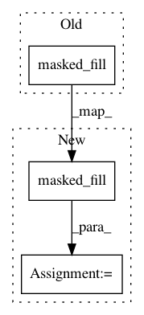

72315ae500bd36c33835760005599fad7b6cb70b,onmt/modules/MultiHeadedAttn.py,MultiHeadedAttention,forward,#MultiHeadedAttention#Any#Any#Any#Any#,70
Before Change
if mask is not None:
scaled = scaled.view(b, self.head_count, l, dim_per_head)
mask = mask.unsqueeze(1).expand_as(scaled)
scaled = scaled.masked_fill(Variable(mask), -1e18) \
.view(bh, l, dim_per_head)
// Return one attn
After Change
if mask is not None:
mask = mask.unsqueeze(1).expand_as(scaled_scores)
scaled_scores = scaled_scores.masked_fill(Variable(mask), -1e18)
// 3) Apply attention dropout and compute context vectors.
attn = self.sm(scaled_scores)
drop_attn = self.dropout(attn)
context = unshape(torch.matmul(drop_attn, value_up))
output = self.final_linear(context)
// CHECK
batch_, q_len_, d_ = output.size()
aeq(q_len, q_len_)
aeq(batch, batch_)
In pattern: SUPERPATTERN
Frequency: 4
Non-data size: 3
Instances
Project Name: OpenNMT/OpenNMT-py
Commit Name: 72315ae500bd36c33835760005599fad7b6cb70b
Time: 2018-03-14
Author: srush@seas.harvard.edu
File Name: onmt/modules/MultiHeadedAttn.py
Class Name: MultiHeadedAttention
Method Name: forward
Project Name: OpenNMT/OpenNMT-py
Commit Name: b6b12fe8fbd4268769a7848b41a9de8110a8808f
Time: 2018-11-30
Author: guillaume.klein@systrangroup.com
File Name: onmt/modules/multi_headed_attn.py
Class Name: MultiHeadedAttention
Method Name: forward
Project Name: dpressel/mead-baseline
Commit Name: da1e8c2de9b265dcb18256a0a087165faf138b42
Time: 2019-01-14
Author: blester125@users.noreply.github.com
File Name: python/baseline/pytorch/torchy.py
Class Name: BahdanauAttention
Method Name: _attention
Project Name: dpressel/mead-baseline
Commit Name: f3c6a236ab65405a3f3f7be8946fb07c5504a646
Time: 2020-06-24
Author: blester125@users.noreply.github.com
File Name: layers/eight_mile/pytorch/layers.py
Class Name: BahdanauAttention
Method Name: _attention